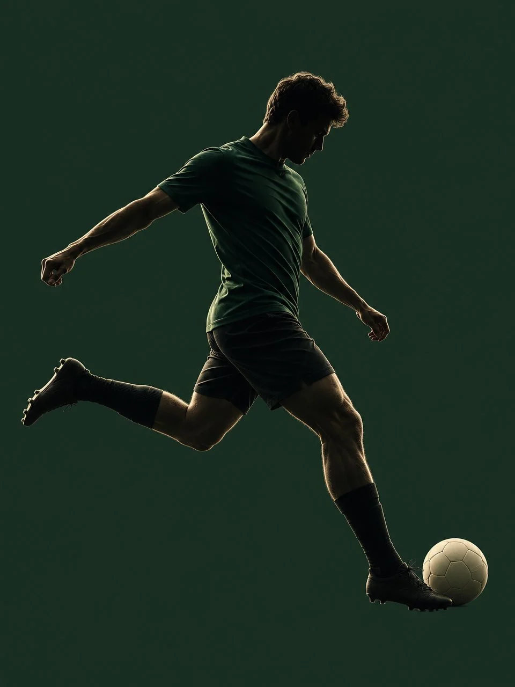

Foot à 5Le premier sport filmé

Sur les terrains équipés, chaque match est filmé automatiquement. Scanne le QR code du terrain et retrouve ta vidéo, sans app ni compte.
Chaque match joué sur un terrain équipé est filmé en entier, en HD. La vidéo est disponible en quelques minutes, sans aucune intervention de ta part.
Aucune inscription. Aucune app. Ton match est là.
Le terrain enregistre tout. Toi tu joues.
Des centaines de matchs joués à Casablanca. Des années de compétitions serrées, de matchs qui comptaient vraiment. Et jamais eu l’occasion de revoir une seule action.
On jouait des matchs qui comptaient vraiment pour nous. Et à chaque défaite, on se disputait parce que personne ne savait vraiment ce qui s’était passé. Tu parles de mémoire, tu te rappelles ce que tu veux bien. C’est pour ça qu’on a créé MyMatch — pour que les matchs qui comptent restent.
Grand passionné de football, j’ai joué plus de 300 matchs à City Foot 5. À chaque fin de match, je trouvais ça dommage de ne pas avoir de rediffusion pour revoir mes plus belles actions, mes meilleurs buts, mais aussi les erreurs commises — celles qu’on oublie trop vite et qui nous empêchent de progresser. Pour progresser, il faut revoir. Pour revoir, il faut une vidéo. C’est pour ça que MyMatch a été créé.
Le même principe sur chaque terrain : une caméra fixe, un QR code, ta vidéo sur ton téléphone.